ブローチ をドロップするmob一覧
一覧ページへ
| スリップワーカー | アンデット | 一般1 | ||||||||
|---|---|---|---|---|---|---|---|---|---|---|
 | スリング(410) | ステッキ(270) | 弾(410) | 兜・帽子(230) | 首(210) | ブローチ(120) | ||||
| ルナティック | アンデット | 一般2 | ||||||||
 | スリング(380) | ステッキ(250) | 弾(380) | 足(210) | 首(190) | ブローチ(130) | ||||
| プレーガー | アンデット | 一般3 | ||||||||
 | スリング(360) | ステッキ(240) | 弾(360) | 腰(200) | 首(180) | ブローチ(140) | ||||
| ジャンキー | アンデット | セミ1 | ||||||||
 | スリング(390) | ステッキ(260) | 鍵(30) | 兜・帽子(220) | イヤリング(200) | ブローチ(150) | ||||
| アライブコープス | アンデット | ボス1 | ||||||||
 | スリング(470) | ステッキ(310) | 鍵(50) | 足(260) | 首(240) | ブローチ(160) | ||||
| ゴースト | アンデット | 一般1 | ||||||||
 | 笛(410) | 翼(10) | 鍵(10) | マント(230) | イヤリング(210) | ブローチ(150) | 水晶(410) | |||
| イリュージョン | アンデット | 一般2 | ||||||||
 | 笛(380) | 翼(250) | 矢(380) | マント(210) | イヤリング(190) | ブローチ(160) | 水晶(380) | 魔弾(380) | ||
| ファントム | アンデット | 一般3 | ||||||||
 | 笛(360) | 翼(240) | 矢(360) | マント(200) | イヤリング(180) | ブローチ(170) | 水晶(240) | 魔弾(360) | ||
| バンシー | アンデット | セミ1 | ||||||||
 | 笛(390) | 翼(260) | イベント(390) | マント(220) | イヤリング(200) | ブローチ(180) | 水晶(260) | |||
| 幻影 | アンデット | ボス1 | ||||||||
 | 笛(470) | 翼(310) | 鍵(470) | マント(260) | イヤリング(240) | ブローチ(190) | 水晶(310) | |||
| 死霊魔術師 | アンデット | セミ1 | ||||||||
 | 杖(390) | 翼(260) | イベント(390) | グローブ(220) | 冠(200) | ブローチ(200) | 本(390) | 水晶(260) | ||
| レイス | アンデット | セミ2 | ||||||||
 | 杖(420) | 翼(280) | 状態異常回復1(420) | グローブ(230) | 冠(210) | ブローチ(250) | 本(420) | 水晶(280) | ||
| ワイト | アンデット | セミ3 | ||||||||
 | 杖(450) | 投擲(300) | CP回復(450) | グローブ(250) | 冠(230) | ブローチ(300) | 本(450) | |||
| リッチ | アンデット | ボス2 | ||||||||
 | 杖(490) | 翼(330) | HP回復(490) | グローブ(270) | 冠(250) | ブローチ(400) | 本(490) | 水晶(330) | ||
| アークリッチ | アンデット | ボス3 | ||||||||
 | 杖(510) | 投擲(340) | 状態異常回復2(130) | グローブ(280) | 冠(260) | ブローチ(500) | 本(510) | |||
| レッドアイ魔法師 | 人間 | 一般4 | ||||||||
| 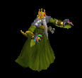 | ステッキ(300) | 笛(200) | 矢(300) | マント(170) | 冠(150) | ブローチ(180) | 魔弾(300) | |||
| レッドアイ幹部 | 人間 | セミ1 | ||||||||
 | ステッキ(390) | 鞭(260) | CP回復(390) | マント(220) | 冠(200) | ブローチ(190) | ||||
| レッドアイ元老 | 人間 | セミ2 | ||||||||
 | ステッキ(420) | 笛(280) | 矢(420) | マント(230) | 冠(210) | ブローチ(200) | 魔弾(420) | |||
| レッドアイ法術師 | 人間 | ボス1 | ||||||||
 | ステッキ(470) | 杖(310) | 状態異常回復2(120) | マント(260) | 冠(240) | ブローチ(210) | 本(310) | |||
| レッドアイ元帥 | 人間 | ボス2 | ||||||||
 | ステッキ(490) | 笛(330) | 弾(490) | マント(270) | イヤリング(250) | ブローチ(220) | ||||
| スリップワーカーEx | アンデット | 一般1 | ||||||||
| スリング(410) | ステッキ(270) | 弾(410) | 兜・帽子(230) | 首(210) | ブローチ(120) | ||||
| ルナティックEx | アンデット | 一般2 | ||||||||
| スリング(380) | ステッキ(250) | 弾(380) | 足(210) | 首(190) | ブローチ(130) | ||||
| プレーガーEx | アンデット | 一般3 | ||||||||
| スリング(360) | ステッキ(240) | 弾(360) | 腰(200) | 首(180) | ブローチ(140) | ||||
| ジャンキーEx | アンデット | セミ1 | ||||||||
| スリング(450) | ステッキ(300) | 鍵(30) | 兜・帽子(250) | イヤリング(230) | ブローチ(150) | ||||
| アライブコープスEx | アンデット | ボス1 | ||||||||
| スリング(1200) | ステッキ(800) | 鍵(60) | 足(670) | 首(600) | ブローチ(160) | ||||
| ゴーストEx | アンデット | 一般1 | ||||||||
| 笛(410) | 翼(270) | 鍵(10) | マント(230) | イヤリング(210) | ブローチ(150) | 水晶(270) | |||
| イリュージョンEx | アンデット | 一般2 | ||||||||
| 笛(380) | 翼(250) | 矢(380) | マント(210) | イヤリング(190) | ブローチ(160) | 水晶(250) | 魔弾(380) | ||
| ファントムEx | アンデット | 一般3 | ||||||||
| 笛(360) | 翼(240) | 矢(360) | マント(200) | イヤリング(180) | ブローチ(170) | 水晶(240) | 魔弾(360) | ||
| バンシーEx | アンデット | セミ1 | ||||||||
| 笛(450) | 翼(300) | イベント(450) | マント(250) | イヤリング(230) | ブローチ(180) | 水晶(300) | |||
| 幻影Ex | アンデット | ボス1 | ||||||||
| 笛(1200) | 翼(800) | 鍵(1200) | マント(670) | イヤリング(600) | ブローチ(190) | 水晶(800) | |||
| ヴァンパイアEx | アンデット | 一般3 | ||||||||
 | 鞭(360) | 牙(240) | イベント(360) | 職業鎧(200) | 指輪(180) | ブローチ(200) | 双剣(240) | |||
| 上級ヴァンパイアEx | アンデット | セミ1 | ||||||||
 | 鞭(450) | 笛(300) | イベント(450) | 職業鎧(250) | 指輪(230) | ブローチ(250) | ||||
| 古代ヴァンパイアEx | アンデット | セミ2 | ||||||||
| 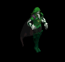 | 鞭(650) | 牙(430) | 弾(650) | 職業鎧(360) | 指輪(330) | ブローチ(300) | 双剣(430) | |||
| ドラキュラEx | アンデット | ボス1 | ||||||||
 | 鞭(1200) | 笛(800) | CP回復(1200) | 職業鎧(670) | 指輪(600) | ブローチ(400) | ||||
| ノースフェラトゥEx | アンデット | ボス2 | ||||||||
 | 鞭(2000) | 牙(1330) | HP回復(2000) | 職業鎧(1110) | 指輪(1000) | ブローチ(500) | 双剣(1330) | |||
| レッドアイ魔法師Ex | 人間 | 一般4 | ||||||||
| ステッキ(300) | 笛(200) | 矢(300) | マント(170) | 冠(150) | ブローチ(180) | 魔弾(300) | ||||
| レッドアイ幹部Ex | 人間 | セミ1 | ||||||||
| ステッキ(450) | 鞭(300) | CP回復(450) | マント(250) | 冠(230) | ブローチ(190) | ||||
| レッドアイ元老Ex | 人間 | セミ2 | ||||||||
| ステッキ(650) | 笛(430) | 矢(650) | マント(360) | 冠(330) | ブローチ(200) | 魔弾(650) | |||
| レッドアイ法術師Ex | 人間 | ボス1 | ||||||||
| ステッキ(1200) | 杖(800) | 状態異常回復2(300) | マント(670) | 冠(600) | ブローチ(210) | 本(800) | |||
| レッドアイ元帥Ex | 人間 | ボス2 | ||||||||
| ステッキ(2000) | 笛(1330) | 弾(2000) | マント(1110) | イヤリング(1000) | ブローチ(220) | ||||
| スリップワーカーZin | アンデット | 一般1 | ||||||||
| スリング(1210) | ステッキ(810) | 弾(1210) | 兜・帽子(670) | 首(610) | ブローチ(120) | ||||
| ルナティックZin | アンデット | 一般2 | ||||||||
| スリング(1380) | ステッキ(920) | 弾(1380) | 足(770) | 首(690) | ブローチ(130) | ||||
| プレーガーZin | アンデット | 一般3 | ||||||||
| スリング(1560) | ステッキ(1040) | 弾(1560) | 腰(870) | 首(780) | ブローチ(140) | ||||
| ジャンキーZin | アンデット | セミ1 | ||||||||
| スリング(650) | ステッキ(430) | 鍵(60) | 兜・帽子(360) | イヤリング(330) | ブローチ(150) | ||||
| アライブコープスZin | アンデット | ボス1 | ||||||||
| スリング(1000) | ステッキ(670) | 鍵(130) | 足(560) | 首(500) | ブローチ(160) | ||||
| ゴーストZin | アンデット | 一般1 | ||||||||
| 笛(1210) | 翼(810) | 鍵(70) | マント(670) | イヤリング(610) | ブローチ(150) | 水晶(810) | |||
| イリュージョンZin | アンデット | 一般2 | ||||||||
| 笛(1380) | 翼(920) | 矢(1380) | マント(770) | イヤリング(690) | ブローチ(160) | 水晶(920) | 魔弾(1380) | ||
| ファントムZin | アンデット | 一般3 | ||||||||
| 笛(1560) | 翼(1040) | 矢(1560) | マント(870) | イヤリング(780) | ブローチ(170) | 水晶(1040) | 魔弾(1560) | ||
| バンシーZin | アンデット | セミ1 | ||||||||
| 笛(650) | 翼(430) | イベント(650) | マント(360) | イヤリング(330) | ブローチ(180) | 水晶(430) | |||
| 幻影Zin | アンデット | ボス1 | ||||||||
| 笛(1000) | 翼(670) | 鍵(160) | マント(560) | イヤリング(500) | ブローチ(190) | 水晶(670) | |||
| ヴァンパイアZin | アンデット | 一般3 | ||||||||
| 鞭(1560) | 牙(1040) | イベント(1560) | 職業鎧(870) | 指輪(780) | ブローチ(200) | 双剣(1040) | |||
| 上級ヴァンパイアZin | アンデット | セミ1 | ||||||||
| 鞭(650) | 笛(430) | イベント(650) | 職業鎧(360) | 指輪(330) | ブローチ(250) | ||||
| 古代ヴァンパイアZin | アンデット | セミ2 | ||||||||
| 鞭(750) | 牙(500) | 弾(750) | 職業鎧(420) | 指輪(380) | ブローチ(300) | 双剣(500) | ||||
| ドラキュラZin | アンデット | ボス1 | ||||||||
| 鞭(1000) | 笛(670) | CP回復(1000) | 職業鎧(560) | 指輪(500) | ブローチ(400) | ||||
| ノースフェラトゥZin | アンデット | ボス2 | ||||||||
| 鞭(1100) | 牙(730) | HP回復(1100) | 職業鎧(610) | 指輪(550) | ブローチ(500) | 双剣(730) | |||
| レッドアイ魔法師Zin | 人間 | 一般4 | ||||||||
| ステッキ(1200) | 笛(800) | 矢(1200) | マント(670) | 冠(600) | ブローチ(180) | 魔弾(1200) | ||||
| レッドアイ幹部Zin | 人間 | セミ1 | ||||||||
| ステッキ(650) | 鞭(430) | CP回復(650) | マント(360) | 冠(330) | ブローチ(190) | ||||
| レッドアイ元老Zin | 人間 | セミ2 | ||||||||
| ステッキ(750) | 笛(500) | 矢(750) | マント(420) | 冠(380) | ブローチ(200) | 魔弾(750) | |||
| レッドアイ法術師Zin | 人間 | ボス1 | ||||||||
| ステッキ(1000) | 杖(670) | 状態異常回復2(250) | マント(560) | 冠(500) | ブローチ(210) | 本(670) | |||
| レッドアイ元帥Zin | 人間 | ボス2 | ||||||||
| ステッキ(1100) | 笛(730) | 弾(1100) | マント(610) | イヤリング(550) | ブローチ(220) | ||||
| ハイエルフ Zin | 人間 | 一般4 | ||||||||
 | 片手剣(50) | ブローチ(150) | 足(100) | 能力向上1(80) | 両手剣(20) | 兜・帽子(30) | 鎌(20) | クロー(50) | ||
| ハイエルフ4 Zin | 人間 | ボス2 | ||||||||
 | 片手剣(450) | ブローチ(1350) | CP回復(900) | 槍(720) | 肩刺青(180) | 兜・帽子(270) | クロー(450) | 箒(720) | ||
| エルフ貴族3 Zin | 人間 | ボス2 | ||||||||
 | 片手剣(450) | ブローチ(1350) | 足(900) | 槍(720) | 槍投擲機(180) | 兜・帽子(270) | クロー(450) | 箒(720) | ||
| エルフガーディア1 Zin | 人間 | セミ3 | ||||||||
 | 片手剣(180) | ブローチ(530) | 帰還(350) | 槍(280) | 状態異常回復1(70) | 兜・帽子(110) | クロー(180) | 箒(280) | ||
| 襲撃団2 Zin | 人間 | セミ3 | ||||||||
 | 鍵(180) | ブローチ(530) | 腕刺青(350) | 笛(280) | 弓(70) | 盾(110) | 銃(70) | |||
| シーク信者(踊り子) Zin | 人間 | 一般3 | ||||||||
 | 鎧(70) | ブローチ(200) | 弾(130) | 十字架(100) | 腰(30) | 翼(40) | 水晶(40) | |||
| シーク守護者4 Zin | 人間 | ボス3 | ||||||||
 | 鎧(600) | ブローチ(1800) | スリング(1200) | 手首(960) | 腰(240) | 翼(360) | 水晶(360) | |||
| シーク天使3 Zin | 人間 | ボス2 | ||||||||
 | 鎧(450) | ブローチ(1350) | スリング(900) | 手首(720) | 腰(180) | 翼(270) | 水晶(270) | |||
| 逃亡魔法師1 Zin | 人間 | 一般4 | ||||||||
 | 両手剣(50) | ブローチ(150) | CP回復(100) | 職業鎧(80) | 状態異常回復1(20) | 杖(30) | 鎌(50) | 本(30) | ||
| 逃亡魔法師4 Zin | 人間 | ボス1 | ||||||||
 | 投擲(250) | ブローチ(750) | 両手剣(500) | 十字架(400) | ステッキ(100) | イベント(150) | 鎌(500) | |||
| 逃亡ハンター Zin | 人間 | 一般4 | ||||||||
 | 投擲(50) | ブローチ(150) | 両手剣(100) | 能力向上1(80) | 状態異常回復1(20) | HP回復(30) | 鎌(100) | |||
| 脱獄犯 Zin | 人間 | セミ1 | ||||||||
 | 投擲(90) | ブローチ(260) | 両手剣(180) | 十字架(140) | 肩刺青(40) | CP回復(50) | 鎌(140) | |||
| 脱獄犯4 Zin | 人間 | ボス3 | ||||||||
 | 投擲(600) | ブローチ(1800) | 腕刺青(1200) | 槍(960) | 両手剣(240) | グローブ(360) | 鎌(240) | 箒(960) | ||
| 狂魔(狂った悪魔…)3 Zin | 悪魔 | ボス1 | ||||||||
 | 片手剣(650) | ブローチ(800) | 腕刺青(330) | 鞭(200) | 矢(100) | イベント(50) | クロー(650) | 魔弾(100) | ||
| ゴールデンマスク Zin | 悪魔 | 一般4 | ||||||||
 | 片手剣(130) | ブローチ(160) | スリング(70) | 能力向上1(40) | 状態異常回復1(20) | 兜・帽子(10) | クロー(130) | |||
| ゴールデンマスク3 Zin | 悪魔 | ボス2 | ||||||||
 | 宝石(1170) | ブローチ(1440) | スリング(590) | 鞭(360) | 矢(180) | HP回復(90) | 魔弾(180) | |||
| 剣闘士3 Zin | 悪魔 | ボス2 | ||||||||
 | 片手剣(1170) | ブローチ(1440) | スリング(590) | 鞭(360) | 矢(180) | 兜・帽子(90) | クロー(1170) | 魔弾(180) | ||
| 古代悪魔 Zin | 悪魔 | 一般4 | ||||||||
 | 指輪(130) | ブローチ(160) | 両手剣(70) | 十字架(40) | 弓(20) | 宝石(10) | 鎌(70) | 銃(20) | ||
| 死神1 Zin | 悪魔 | セミ1 | ||||||||
 | 指輪(230) | ブローチ(280) | 十字架(120) | 十字架(70) | 状態異常回復1(40) | グローブ(20) | ||||
| 邪臣2 Zin | 悪魔 | セミ3 | ||||||||
 | 鍵(460) | ブローチ(560) | 両手剣(230) | 十字架(140) | 弓(70) | グローブ(40) | 鎌(230) | 銃(70) | ||
| 魔女1 Zin | 悪魔 | セミ1 | ||||||||
| 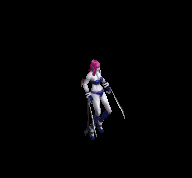 | 鎧(230) | ブローチ(280) | CP回復(120) | 笛(70) | ステッキ(40) | イベント(20) | ||||
| サキュバス Zin | 悪魔 | 一般4 | ||||||||
| 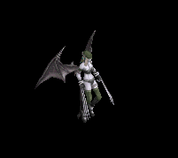 | 鎧(130) | ブローチ(160) | 弾(70) | 笛(40) | ステッキ(20) | HP回復(10) | ||||
| パンタズドリーム Zin | 悪魔 | セミ1 | ||||||||
 | 鎧(230) | ブローチ(280) | 足(120) | 笛(70) | ステッキ(40) | 杖(20) | 本(20) | |||
| カマキリ戦士3 Zin | 悪魔 | ボス2 | ||||||||
 | 両手剣(1170) | ブローチ(1440) | 腕刺青(590) | 槍(360) | 状態異常回復1(180) | HP回復(90) | 鎌(1170) | 箒(360) | ||
| パンプキンヘッド2 Zin | 悪魔 | セミ3 | ||||||||
 | 鍵(460) | ブローチ(560) | CP回復(230) | 笛(140) | 腰(70) | グローブ(40) | ||||
| ジャックランタン1 Zin | 悪魔 | セミ2 | ||||||||
 | 指輪(360) | ブローチ(440) | 腕刺青(180) | 笛(110) | 腰(60) | グローブ(30) | ||||
| ビッグモンキー1 Zin | 動物 | セミ1 | ||||||||
 | 能力向上2(120) | ブローチ(90) | 腕刺青(70) | 職業鎧(50) | 状態異常回復1(40) | イベント(20) | ||||
| マウンテン戦士2 Zin | 動物 | セミ3 | ||||||||
| 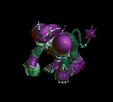 | 冠(250) | ブローチ(180) | 宝石(140) | 職業鎧(110) | 状態異常回復1(70) | 翼(40) | 水晶(40) | |||
| 蛙 Zin | 動物 | 一般4 | ||||||||
 | 鍵(70) | ブローチ(50) | 弾(40) | 槍(30) | 槍投擲機(20) | 杖(10) | 本(10) | 箒(30) | ||
| ラジエータカエル3 Zin | 動物 | ボス2 | ||||||||
| 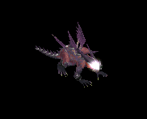 | 投擲(630) | ブローチ(450) | 足(360) | 槍(270) | 槍投擲機(180) | 杖(90) | 本(90) | 箒(270) | ||
| ラジエータカメ3 Zin | 動物 | ボス2 | ||||||||
 | 冠(630) | ブローチ(450) | スリング(360) | 能力向上1(270) | 肩刺青(180) | HP回復(90) | ||||
| 装甲亀2 Zin | 動物 | セミ3 | ||||||||
 | 能力向上2(250) | ブローチ(180) | 帰還(140) | 能力向上1(110) | 弓(70) | イベント(40) | 銃(70) | |||
| ダークバッファロ1 Zin | 神獣 | セミ1 | ||||||||
 | 指輪(160) | ブローチ(230) | 弾(120) | 鞭(20) | 腕刺青(40) | 兜・帽子(90) | ||||
| ダークバッファロ4 Zin | 神獣 | ボス2 | ||||||||
 | 指輪(810) | ブローチ(1170) | 弾(630) | 鞭(90) | 腰(180) | 兜・帽子(450) | ||||
| 赤パネルバッファ3 Zin | 神獣 | ボス2 | ||||||||
| 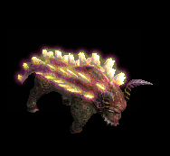 | 指輪(810) | ブローチ(1170) | 弾(630) | 鞭(90) | 腰(180) | 兜・帽子(450) | ||||
| エメラルドバッファ Zin | 神獣 | セミ1 | ||||||||
 | 指輪(160) | ブローチ(230) | 弾(120) | 鞭(20) | 腰(40) | 兜・帽子(90) | ||||
| ユニコーン2 Zin | 神獣 | ボス1 | ||||||||
| 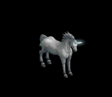 | 能力向上2(450) | ブローチ(650) | 能力向上2(350) | 槍(50) | 弓(100) | 翼(250) | 箒(50) | 水晶(250) | 銃(100) | |
| ペガサス1 Zin | 神獣 | セミ1 | ||||||||
| 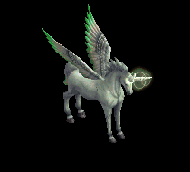 | 杖(160) | ブローチ(230) | 牙(120) | 槍(20) | 弓(40) | 翼(90) | 本(160) | 箒(20) | 双剣(120) | 水晶(90) |
| ブルーウイング3 Zin | 神獣 | ボス2 | ||||||||
 | 冠(810) | ブローチ(1170) | 牙(630) | 槍(90) | 弓(180) | 翼(450) | 箒(90) | 双剣(630) | 水晶(450) | 銃(180) |
| 使徒4 Zin | 神獣 | ボス3 | ||||||||
 | 鎧(1080) | ブローチ(1560) | スリング(840) | 笛(120) | 状態異常回復1(240) | 盾(600) | ||||
| 審判官3 Zin | 神獣 | ボス2 | ||||||||
| 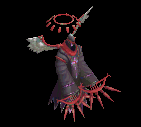 | 鎧(810) | ブローチ(1170) | スリング(630) | 笛(90) | 腕刺青(180) | 盾(450) | ||||
| ウィークネス天使1 Zin | 神獣 | セミ2 | ||||||||
| 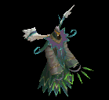 | 能力向上2(250) | ブローチ(360) | スリング(190) | 笛(30) | 矢(60) | 盾(140) | 魔弾(60) | |||
| 堕天使 Zin | 神獣 | 一般3 | ||||||||
 | 投擲(120) | ブローチ(170) | 帰還(90) | 能力向上1(10) | 状態異常回復1(30) | HP回復(70) | ||||
| ゴースト | アンデット | 一般1 | ||||||||
| 笛(410) | 翼(10) | 鍵(10) | マント(230) | イヤリング(210) | ブローチ(150) | 水晶(10) | |||
| 幽霊 | アンデット | 一般2 | ||||||||
| 笛(380) | 翼(250) | 矢(380) | マント(210) | イヤリング(190) | ブローチ(160) | 水晶(250) | 魔弾(380) | ||
| スペクター | アンデット | 一般3 | ||||||||
| 笛(360) | 翼(240) | 矢(360) | マント(200) | イヤリング(180) | ブローチ(170) | 水晶(240) | 魔弾(360) | ||
| スクリマー | アンデット | セミ1 | ||||||||
| 笛(390) | 翼(260) | イベント(390) | マント(220) | イヤリング(200) | ブローチ(180) | 水晶(260) | |||
| ファントム | アンデット | ボス1 | ||||||||
| 笛(470) | 翼(310) | 鍵(470) | マント(260) | イヤリング(240) | ブローチ(190) | 水晶(310) | |||
| ゴースト Ex | アンデット | 一般1 | ||||||||
| 笛(410) | 翼(270) | 鍵(10) | マント(230) | イヤリング(210) | ブローチ(150) | 水晶(270) | |||
| 幽霊 Ex | アンデット | 一般2 | ||||||||
| 笛(380) | 翼(250) | 矢(380) | マント(210) | イヤリング(190) | ブローチ(160) | 水晶(250) | 魔弾(380) | ||
| スペクター Ex | アンデット | 一般3 | ||||||||
| 笛(360) | 翼(240) | 矢(360) | マント(200) | イヤリング(180) | ブローチ(170) | 水晶(240) | 魔弾(360) | ||
| スクリマー Ex | アンデット | セミ1 | ||||||||
| 笛(450) | 翼(300) | イベント(450) | マント(250) | イヤリング(230) | ブローチ(180) | 水晶(300) | |||
| ファントム Ex | アンデット | ボス1 | ||||||||
| 笛(1200) | 翼(800) | 鍵(1200) | マント(670) | イヤリング(600) | ブローチ(190) | 水晶(800) | |||
| レッドアイ魔法師 | 人間 | 一般4 | ||||||||
| ステッキ(300) | 笛(200) | 矢(300) | マント(170) | 冠(150) | ブローチ(180) | 魔弾(300) | ||||
| レッドアイ隊員 | 人間 | セミ1 | ||||||||
| ステッキ(390) | 鞭(260) | CP回復(390) | マント(220) | 冠(200) | ブローチ(190) | ||||
| レッドアイ隊長 | 人間 | セミ2 | ||||||||
| ステッキ(420) | 笛(280) | 矢(420) | マント(230) | 冠(210) | ブローチ(200) | 魔弾(420) | |||
| レッドアイ大術師 | 人間 | ボス1 | ||||||||
| ステッキ(470) | 杖(310) | 状態異常回復2(120) | マント(260) | 冠(240) | ブローチ(210) | 本(310) | |||
| レッドアイ議長 | 人間 | ボス2 | ||||||||
| ステッキ(490) | 笛(330) | 弾(490) | マント(270) | イヤリング(250) | ブローチ(220) | ||||
| レッドアイ魔法師 Ex | 人間 | 一般4 | ||||||||
| ステッキ(300) | 笛(200) | 矢(300) | マント(170) | 冠(150) | ブローチ(180) | 魔弾(300) | ||||
| レッドアイ隊員 Ex | 人間 | セミ1 | ||||||||
| ステッキ(450) | 鞭(300) | CP回復(450) | マント(250) | 冠(230) | ブローチ(190) | ||||
| レッドアイ隊長 Ex | 人間 | セミ2 | ||||||||
| ステッキ(650) | 笛(430) | 矢(650) | マント(360) | 冠(330) | ブローチ(200) | 魔弾(650) | |||
| レッドアイ大術師 Ex | 人間 | ボス1 | ||||||||
| ステッキ(1200) | 杖(800) | 状態異常回復2(300) | マント(670) | 冠(600) | ブローチ(210) | 本(800) | |||
| レッドアイ議長 Ex | 人間 | ボス2 | ||||||||
| ステッキ(2000) | 笛(1330) | 弾(2000) | マント(1110) | イヤリング(1000) | ブローチ(220) | ||||
| ヴァンパイア Ex | アンデット | 一般3 | ||||||||
| 鞭(360) | 牙(240) | イベント(360) | 職業鎧(200) | 指輪(180) | ブローチ(200) | 双剣(240) | |||
| ヴァンパイア男爵 Ex | アンデット | セミ1 | ||||||||
| 鞭(450) | 笛(300) | イベント(450) | 職業鎧(250) | 指輪(230) | ブローチ(250) | ||||
| ヴァンパイア伯爵 Ex | アンデット | セミ2 | ||||||||
| 鞭(650) | 牙(430) | 弾(650) | 職業鎧(360) | 指輪(330) | ブローチ(300) | 双剣(430) | ||||
| ヴァンパイア公爵 Ex | アンデット | ボス1 | ||||||||
| 鞭(1200) | 笛(800) | CP回復(1200) | 職業鎧(670) | 指輪(600) | ブローチ(400) | ||||
| ヴァンパイア君主 Ex | アンデット | ボス2 | ||||||||
| 鞭(2000) | 牙(1330) | HP回復(2000) | 職業鎧(1110) | 指輪(1000) | ブローチ(500) | 双剣(1330) | |||
| ハイエルフ Zin | 人間 | 一般4 | ||||||||
| 片手剣(50) | ブローチ(150) | 足(100) | 能力向上1(80) | 両手剣(20) | 兜・帽子(30) | 鎌(20) | クロー(50) | ||
| 時の旅人 Zin | 人間 | 一般4 | ||||||||
| 鎧(70) | ブローチ(200) | 弾(130) | 十字架(100) | 腰(30) | 翼(40) | 水晶(40) | |||
| サキュバス Zin | 悪魔 | 一般4 | ||||||||
| 鎧(130) | ブローチ(160) | 弾(70) | 笛(40) | ステッキ(20) | HP回復(10) | |||||
| フロッグ Zin | 動物 | 一般4 | ||||||||
| 鍵(70) | ブローチ(50) | 弾(40) | 槍(30) | 槍投擲機(20) | 杖(10) | 本(10) | 箒(30) | ||
| ハイエルフ Zin | 人間 | 一般4 | ||||||||
| 片手剣(50) | ブローチ(150) | 足(100) | 能力向上1(80) | 両手剣(20) | 兜・帽子(30) | 鎌(20) | クロー(50) | ||
| サキュバス Zin | 悪魔 | 一般4 | ||||||||
| 鎧(130) | ブローチ(160) | 弾(70) | 笛(40) | ステッキ(20) | HP回復(10) | |||||
| フロッグ Zin | 動物 | 一般4 | ||||||||
| 鍵(70) | ブローチ(50) | 弾(40) | 槍(30) | 槍投擲機(20) | 杖(10) | 本(10) | 箒(30) | ||
| 時の旅人 Zin | 人間 | 一般4 | ||||||||
| 鎧(70) | ブローチ(200) | 弾(130) | 十字架(100) | 腰(30) | 翼(40) | 水晶(40) | |||
| プレーガーEv | アンデット | 一般3 | ||||||||
| スリング(1560) | ステッキ(1040) | 弾(1560) | 腰(870) | 首(780) | ブローチ(140) | ||||
| ヴァンパイアEv | アンデット | 一般3 | ||||||||
| 鞭(1560) | 牙(1040) | イベント(1560) | 職業鎧(870) | 指輪(780) | ブローチ(200) | 双剣(1040) | |||
| ファントムEv | アンデット | 一般3 | ||||||||
| 笛(1560) | 翼(1040) | 矢(1560) | マント(870) | イヤリング(780) | ブローチ(170) | 水晶(1040) | 魔弾(1560) | ||
| レッドアイ魔法師Ev | 人間 | 一般4 | ||||||||
| ステッキ(1200) | 笛(800) | 矢(1200) | マント(670) | 冠(600) | ブローチ(180) | 魔弾(1200) | ||||
| バンシーEv | アンデット | セミ1 | ||||||||
| 笛(650) | 翼(430) | イベント(650) | マント(360) | イヤリング(330) | ブローチ(180) | 水晶(430) | |||
| 古代ヴァンパイアEv | アンデット | セミ2 | ||||||||
| 鞭(750) | 牙(500) | 弾(750) | 職業鎧(420) | 指輪(380) | ブローチ(300) | 双剣(500) | ||||
| エルフガーディアEv | 人間 | セミ3 | ||||||||
| 片手剣(180) | ブローチ(530) | 帰還(350) | 槍(280) | 状態異常回復1(70) | 兜・帽子(110) | クロー(180) | 箒(280) | ||
| ゴーストSp | アンデット | 一般4 | ||||||||
| 笛(1200) | 翼(800) | 鍵(100) | マント(700) | イヤリング(600) | ブローチ(150) | 水晶(800) | |||
| ヴァンパイアSp | アンデット | 一般4 | ||||||||
| 鞭(1500) | 牙(1000) | イベント(1500) | 職業鎧(900) | 指輪(800) | ブローチ(200) | 双剣(1000) | |||
| サキュバスSp | 悪魔 | セミ1 | ||||||||
 | 鎧(1200) | ブローチ(500) | 弾(700) | 笛(600) | 職業鎧(500) | HP回復(100) | ||||
| 狂魔Sp | 悪魔 | 一般4 | ||||||||
 | 片手剣(1200) | ブローチ(1400) | 投擲(1400) | 鞭(100) | 矢(200) | 兜・帽子(100) | クロー(1100) | 魔弾(200) | ||
| 古代悪魔Sp | 悪魔 | セミ1 | ||||||||
 | 指輪(1500) | ブローチ(700) | 職業鎧(1000) | 十字架(100) | 弓(300) | 冠(1000) | 本(700) | 銃(300) | ||
| 堕天使Sp | 神獣 | セミ1 | ||||||||
 | 投擲(600) | ブローチ(800) | 帰還(300) | 能力向上1(300) | 状態異常回復1(300) | HP回復(300) | ||||
| サキュバス3 Sp | 悪魔 | セミ1 | ||||||||
 | 鎧(1200) | ブローチ(500) | 弾(700) | 笛(600) | 職業鎧(500) | HP回復(100) | ||||
| スリップワーカーSp | アンデット | 一般4 | ||||||||
| スリング(1200) | 弾(800) | ステッキ(1200) | 兜・帽子(700) | 首(600) | ブローチ(100) | ||||
| 覚醒サキュバスZin | 悪魔 | セミ1 | ||||||||
| 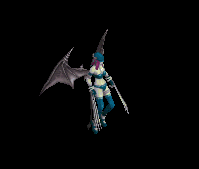 | 鎧(130) | ブローチ(160) | 弾(70) | 笛(40) | ステッキ(20) | HP回復(10) | ||||
| 踊り子 Sp | 人間 | 一般4 | ||||||||
 | 鎧(70) | ブローチ(200) | 弾(130) | 十字架(100) | 腰(30) | 翼(40) | 水晶(40) | |||
| ハイエルフ Sp | 人間 | 一般4 | ||||||||
 | 片手剣(50) | ブローチ(150) | 足(100) | 能力向上1(80) | 両手剣(20) | 兜・帽子(30) | 鎌(20) | クロー(50) |